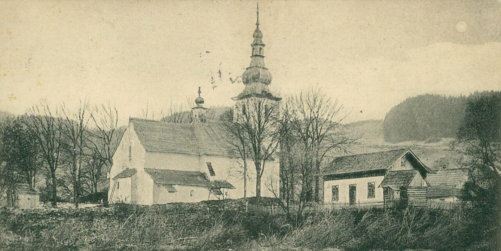

Półrzeczki, dom nr 50 · 1842 · nowa historia z ksiąg
Węgierski tytoń
W styczniu 1842 roku ojciec Franciszka Kucaja przyniósł księdzu smutną wiadomość z Krościenka. Jego syn zginął przy granicy z Węgrami, bo nie chciał oddać tytoniu.
W styczniu 1842 roku w księdze zmarłych Półrzeczek pojawił się wpis inny niż wszystkie. Zajmuje kilka rubryk, a ksiądz starannie zaznaczył, skąd wie o tej śmierci. Nie widział zmarłego ani go nie pochował. Wiadomość przyniósł mu ojciec.
Z księgi zmarłych Półrzeczek, 18 stycznia 1842
Franciscus filius Joachimi et Mariae Kucaj, a militibus limites custodientibus occasione tubacae hungaricae seu herbae nicotianae, dum talem illis dare noluerit, sclopeto trajectus est, ut pater ejus fatetur, qui hanc tristem notitiam a … Curato in Krościenko, ubi corpus infelicis Francisci filii ejus sepultum exstitit, hauserat.
Franciszek, syn Joachima i Marii Kucajów, został zastrzelony przez żołnierzy strzegących granicy z powodu węgierskiego tytoniu, którego nie chciał im oddać. Tak zeznał jego ojciec, który tę smutną wiadomość otrzymał od duszpasterza w Krościenku, gdzie pochowano ciało nieszczęsnego Franciszka.
Półrzeczki, zgony 1786–1848 · sygn. 4269/5515 · skan 039 · zobacz skan ↗
Franciszek miał 21 lat i pochodził z domu nr 50 w Półrzeczkach. Zginął w okolicy Krościenka nad Dunajcem, niespełna 30 kilometrów od domu w linii prostej, niedaleko ówczesnej granicy Galicji z Węgrami. Tam też go pochowano.

Dlaczego tytoń
W krajach monarchii austriackiej, także w Galicji, tytoń był od 1784 roku monopolem: wyrabiać go i sprzedawać mogło tylko państwo. Węgry objęto monopolem dopiero w 1850 roku, a do tego czasu tytoń uprawiano tam i sprzedawano swobodnie. Tytoń przyniesiony z Węgier był więc w Galicji kontrabandą, a granicy pilnowała uzbrojona straż.
Ludzie z parafii chodzili wtedy na Węgry za pracą. O jednym z nich, który zmarł nad Cisą w 1853 roku, opowiada historia „Rakamaz, 1853”. Czy Franciszek niósł tytoń na sprzedaż, czy dla siebie, wpis nie mówi. Mówi tylko, że nie chciał go oddać.
W księdze wpis stoi po wpisie z 25 stycznia, a więc ksiądz dopisał go później, zapewne wtedy, gdy ojciec przyszedł z wiadomością. Data 18 stycznia może więc oznaczać dzień śmierci albo dzień, w którym wieść dotarła do Półrzeczek.
Na ile to pewne
- PewneTreść wpisu. Odczyt porównany ze skanem.
- PrawdopodobneTło: monopol tytoniowy w krajach austriackich od 1784 roku i rozciągnięcie go na Węgry dopiero w 1850 roku.
- MożliweŻe Franciszek przenosił tytoń przez granicę na sprzedaż. Wpis mówi tylko o tytoniu, którego nie chciał oddać.
- Do sprawdzeniaImię duszpasterza z Krościenka, którego nie udało się odczytać.
Czego nie wiemy
- Gdzie dokładnie i którego dnia zginął Franciszek. Akt jego pogrzebu powinien być w księgach parafii Krościenko.
- Czy ktoś odpowiedział za ten strzał.
Źródła
- Księga zmarłych Półrzeczek 1786–1848, sygn. 4269/5515 (skan 039), w serwisie Metryki PTG.
- O monopolu tytoniowym: Wikipedia, hasło „Austria Tabak” (po niemiecku).